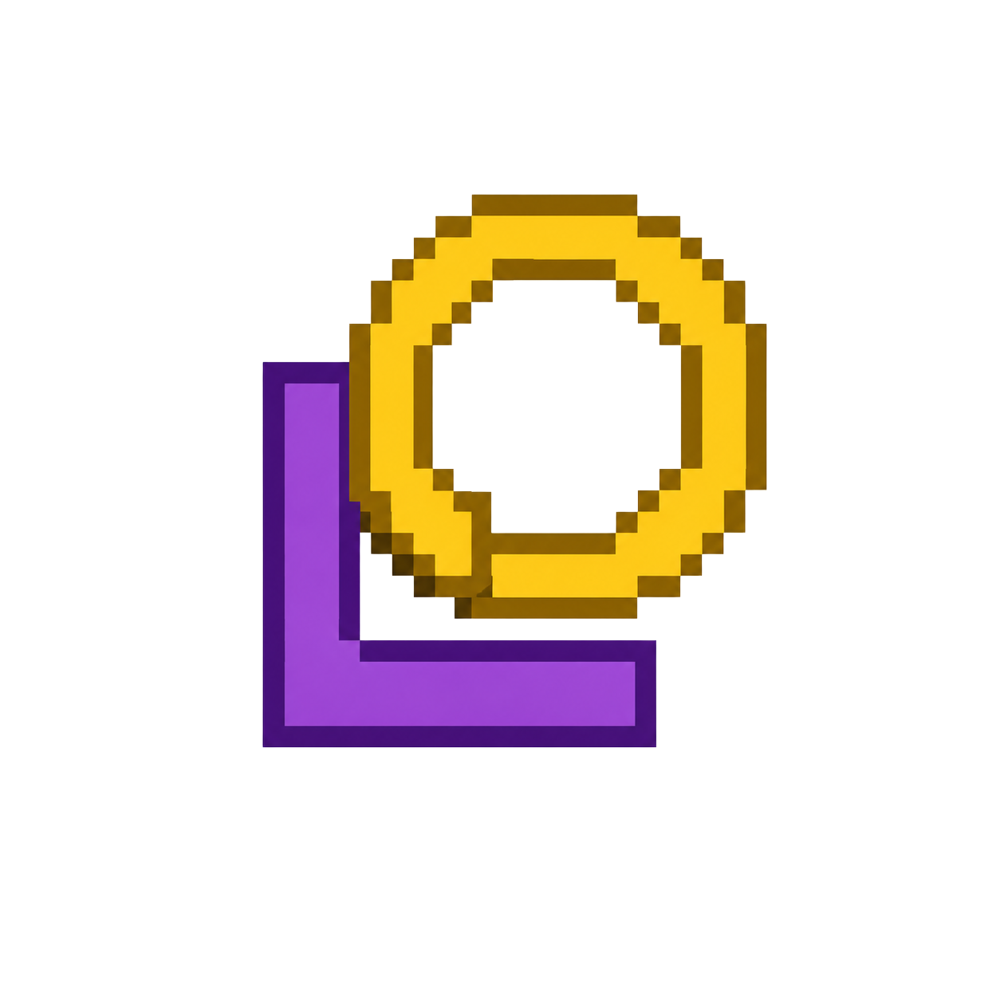

Bookmarks
Keep the pages you actually want to come back to.

LOKUMLokum is a Windows browser that keeps everyday browsing simple.
THE IDEA
Lokum is still in development. I'm building the features I use most and testing them as I go.
FEATURES
Some of the features currently available in Lokum.
Keep the pages you actually want to come back to.
Find where you've been without digging through clutter.
Keep saved login information available when you need it.
See and manage the files you've downloaded.
Keep video visible while you move around the web.
Open a private browsing window when you need one.
Reduce unwanted advertising while you browse.
Get useful suggestions while entering a search.
EARLY ACCESS
Lokum is still in development. If you want to try it for a few hours and send me some feedback, you can apply below.
DEVELOPMENT
The current plan for Lokum.
01
02
03
04